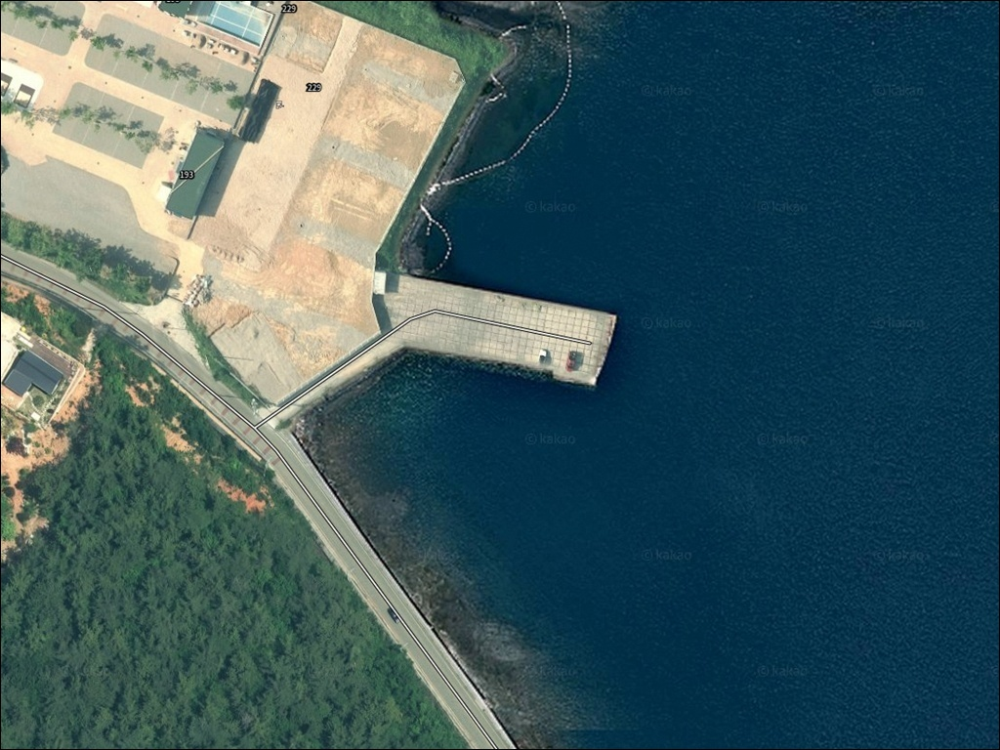
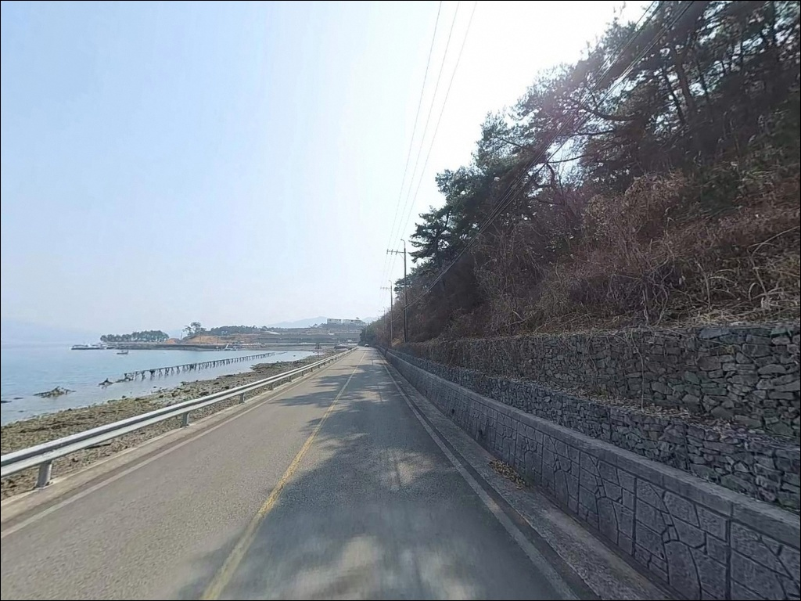
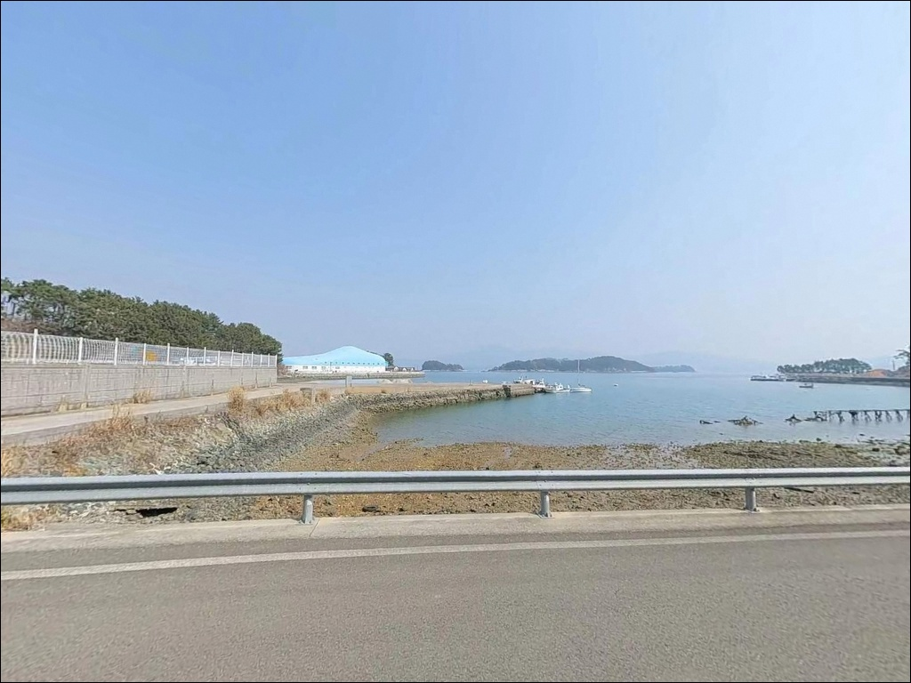
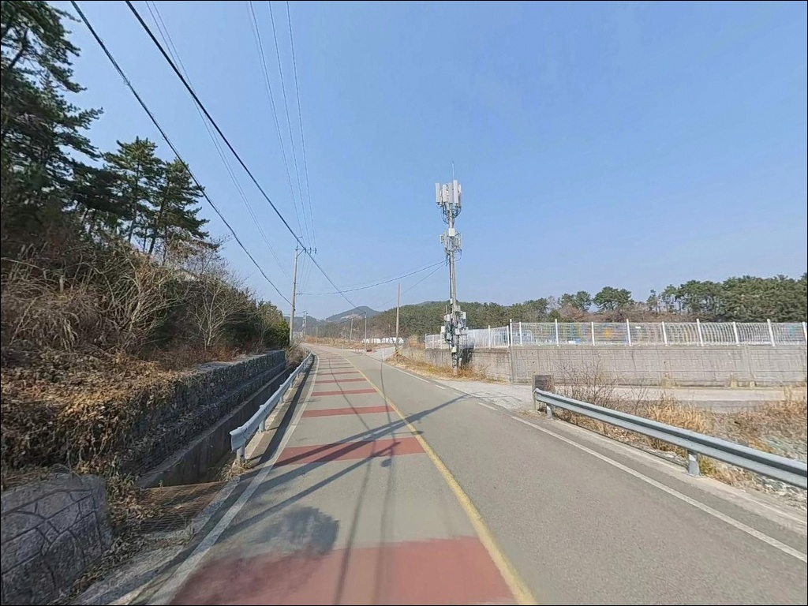
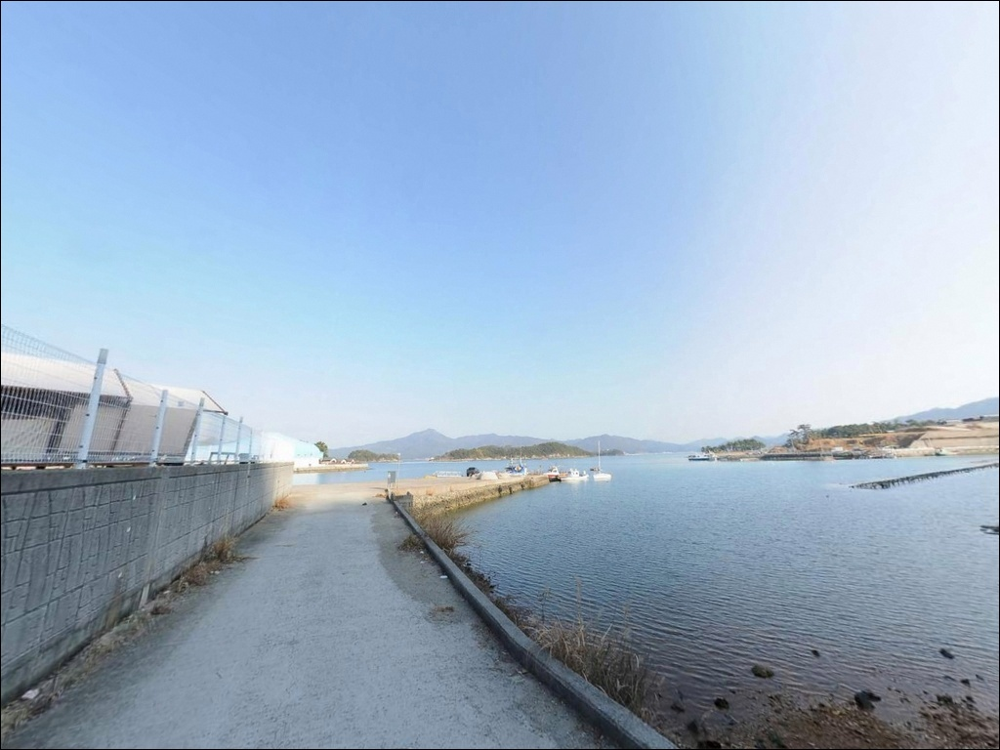
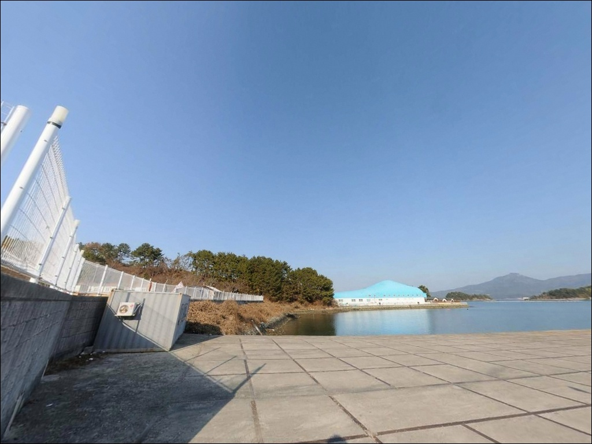
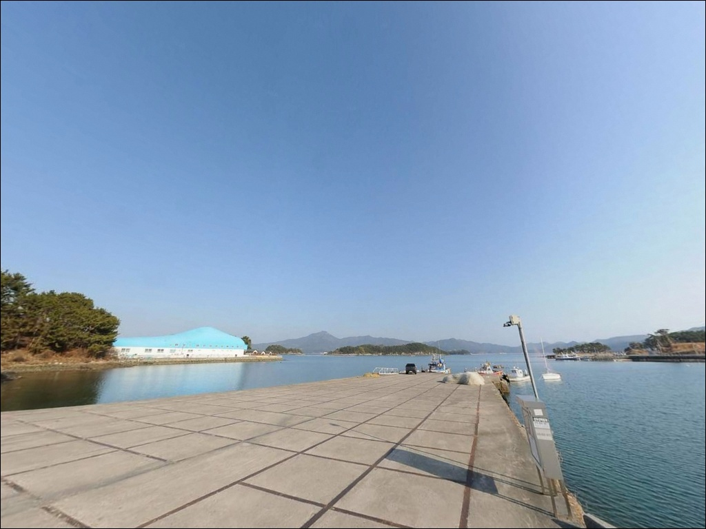
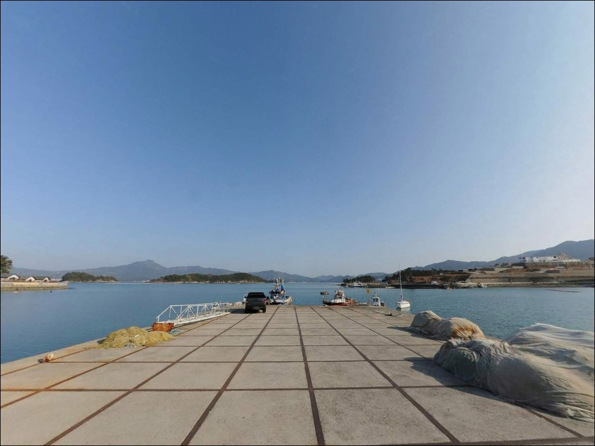
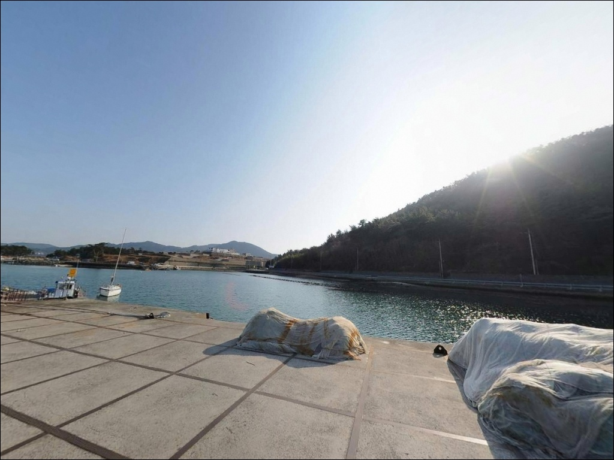

조류 약할 줄 알았던 두포방파제, 만조 전후 2시간에 몰린 입질
이 페이지에는 광고(제휴 링크 포함)가 있으며, 광고 링크를 통해 구매하면 운영자가 판매 수익 또는 수수료를 받을 수 있습니다. 포인트 사진: 카카오맵 스카이뷰·로드뷰. 이 페이지의 지도·사진 이미지는 카카오맵의 실제 서비스 이미지와 다를 수 있습니다.


포인트 안내
두포방파제
경남 고성군 삼산면 두포리 139-4
내만 방파제라 조류가 약할 거라 판단하고
물때 계산 없이 진입하는 것이
이 포인트에서 가장 많이 반복되는 실수입니다.
자란만 내만 특성상 만조·간조 전후로
입질 타이밍이 뚜렷하게 갈리는 구조이며,
이 흐름을 놓치면 기다리는 시간만 길어집니다.
고성반도와 사량도 방면이 에워싸는
준폐쇄형 내만인 자란만 안쪽,
삼산면 두포리에 자리한 이 방파제는
포교항 소속 지방어항 방파제로
연장 240m, 물양장 148m 규모의
중소형 생활낚시 거점입니다.
이 글은 두포방파제의
진입 환경, 차박 여건, 물때 판단 기준,
지형 기반 낚시 방식 적합성에 집중합니다.
조황 단정이나 특정 어종 보장은
이 글의 범위에 포함되지 않습니다.

1. 진입 동선과 차량 접근 조건
두포리 139-4 기준 진입로는
삼산면 해안도로에서 포교마을 안쪽으로
연결되는 편도 1차선 포장도로입니다.
급경사나 비포장 구간은 없지만,
마을 안길로 들어서면 도로 폭이 좁아져
대형 차량의 교행과 회차가 제한됩니다.
소형 승용차 또는 중형 SUV 수준의 차량이
진입에 가장 유리하며,
캠핑카나 장축 화물형 차량이라면
출발 전 위성지도로 마을 안길 폭을
먼저 확인하는 편이 안전합니다.
마을 안길 폭이 좁아 대형 차량은
진입 전 경로 확인이 방문 성패를 가릅니다.
방파제까지 차량 직접 접근이 가능하며,
방파제 입구 기저부 콘크리트 공터에
1~2대 규모의 주차 공간이 확보됩니다.
포교마을 선착장 주변 공터와
진입 도로변 갓길도 주차 후보지로
활용할 수 있습니다.

2. 차박 환경과 야간 체류 여건
포교마을은 소규모 어촌 마을로
민가 밀집도가 낮고
야간 차량 통행이 거의 없는 편입니다.
마을 가로등이 방파제 초입까지 비추는 구조이며,
완전한 암흑 환경은 아니지만
프라이버시 측면에서 양호한 조건입니다.
자란만 내만 구조로 파도와 너울 영향이 적어
낚시 후 차 안에서 하룻밤 머무는 용도로는
나쁘지 않습니다.
다만 이른 아침 어선 출항 소음은
감안해야 하며,
방파제 입구 공터 주차 공간이 좁아
차박을 메인 목적으로 삼기보다
낚시 후 단기 체류 형태가 현실적입니다.
마을 주민 생활공간과 인접한 위치이므로
야간 소음 및 불빛 관리가 필요합니다.
어선 조업 통행로를 막지 않는 자리에
주차하는 것이 기본 매너입니다.


3. 주변 편의시설 및 인프라 현황
두포방파제 반경 1km 이내에는
편의점이나 마트를 기대하기 어렵습니다.
삼산면 소재지 방향으로 차량 5~7분 거리에
편의점과 소규모 마트, 주유소가 위치하며,
출발 전 삼산면 소재지에서
식수·연료·낚시 소품을 미리 챙기는 것이
현실적인 준비 방식입니다.
두포리 권역 인근에는 하모자연산횟집,
나포리횟집 등 현지 식당이
삼산면 두포리 권역에 확인됩니다.
응급 상황 발생 시 고성읍까지 거리가
있으므로 비상약품과
충분한 수분 준비는 기본입니다.
반경 10km 권역으로 이동하면
고성군청 방향에 대형마트와 병원이 위치하며,
낚시 소품이나 채비가 부족할 경우
이 동선을 사전에 확인해두는 편이 효율적입니다.

4. 진입 전 반드시 챙겨야 할 준비사항
두포방파제 방문 전 가장 먼저 확인할 것은
물때입니다.
자란만이란 고성반도와 사량도·거제도 방면이
에워싸는 준폐쇄형 남해 내만으로,
외해 너울 영향은 적지만
만조·간조를 전후한 타이밍에
입질이 집중되는 경향이 있습니다.
바다타임에서 두포리 기준 물때를 확인하고
조류 흐름이 살아 있는 시간대를 먼저 계산한 뒤
출발 시각을 잡는 것이 기본입니다.
내만이라 기상 영향이 상대적으로 적지만,
남서~남동 방향 바람이 강한 날은
외항 쪽 발판 상태가 달라질 수 있습니다.
출발 당일 아침 기상청 해양예보를
한 번 더 확인하는 것이
현장 낭비를 줄이는 방법입니다.
방파제 석축 구간은 이끼나 해조류로
미끄러울 수 있으므로
안전화와 구명조끼는 필수입니다.
야간 낚시 시 헤드랜턴과 여분 조명을 반드시 지참하고,
선착장 내 어민 어구와
조업 차량 통행로를 침범하지 않는 자리를
먼저 확보해야 합니다.

5. 자란만 내만이 만드는 지형 낚시 여건
두포방파제의 핵심은
자란만 내만 구조 안에 자리한
방파제 외항 선단부와 꺾임 구간입니다.
이 구간이 자란만을 통해 순환하는
조류를 집중적으로 받으며,
원투낚시와 찌낚시 모두 대응 가능한
핵심 포인트 구간으로 기능합니다.
방파제 끝단 기준 만조 시 수심은
5~7m 내외 수준으로 유지됩니다.
해저 지형은 모래와 뻘이 섞인
혼합 바닥 구조이며,
바닥 걸림이 비교적 적어
원투 채비 운용이 안정적입니다.
내항 물양장 석축 구간은
발판이 평탄해 야간 낚시 접근에 유리합니다.
방파제 외항은 자란만 내측으로 열려 있어
남서~남동 방향 파도 영향만 받는 구조입니다.
이 때문에 기상이 나빠도 내항 방향은
낚시가 가능한 조건을 유지하는 편입니다.
포교항 공식 주요 어종 기록에는
갯장어·도다리·멸치가 등재되어 있습니다.
출조 전 최신 조황은 꼭 검색해 보시기 바랍니다.


6. 두포방파제에 어울리는 낚시 스타일
이 포인트에서 가장 안정적인 낚시는
원투낚시입니다.
방파제 외항 초입에서 꺾임 구간까지
모래·뻘 혼합 바닥을 공략하는 방식이 유효하며,
도다리·붕장어·갯장어 계열이
이 지형에서 기대해 볼 수 있는 어종입니다.
조류가 살아 있는 시간대에
외항 정면으로 채비를 보내는 것이
이 포인트의 기본 운용 방식입니다.
릴찌낚시도 노려볼 만합니다.
방파제 선단부에서 조류를 타고
찌를 흘리는 방식이 이 지형에 잘 맞으며,
자란만 내만권에서 기대할 수 있는
감성돔 계열 낚시에 유리한 환경입니다.
만조 전후 2시간이 집중 공략 타이밍입니다.
야간에는 내항 석축 구간과 물양장 주변에서
소형 지그헤드 채비를 활용한
볼락 라이트게임을 시도해볼 수 있습니다.
가을철에는 외항 방향으로
갑오징어 에깅도 가능한 지형이며,
자란만 해역은 남해 내만권 에깅 패턴을
공유하는 해역입니다.

7. 대안 포인트와 플랜 B 동선
두포방파제 주차 공간이 여의치 않거나
조류 여건이 기대에 못 미칠 때
첫 번째 대안은
포교방파제입니다.
두포리에서 차량으로 약 5분 거리이며,
두포방파제보다 규모가 크고
외항 쪽 수심이 깊어
찌낚시와 원투낚시 모두 안정적입니다.
두모마을 방파제도 두포리 북동쪽에서
가까운 거리에 위치한 대안입니다.
두모항 어촌정주어항으로 등록된 곳으로
동일 해역 조건을 공유하며,
소반경 내에서 포인트를 옮겨
탐색하기 좋은 구조입니다.
자란만 권역에서 낚시 여건이 가장 갖춰진
대안 포인트는 맥전포방파제입니다.
두포리에서 약 12km 거리(하일면 춘암리)이며,
고성군 최대 규모 방파제로
화장실과 주차장이 확보되어 있습니다.
감성돔, 갈치, 볼락, 원투낚시(도다리·붕장어·쥐노래미) 등
낚시 선택지가 다양하고
차박 대응 인프라도 두포방파제보다 유리합니다.

조용한 자란만 내만,
물때 계산이 앞서야 포인트가 됩니다
원투낚시와 릴찌낚시를 주로 즐기는 낚시인에게
두포방파제의 지형 조건은
잘 맞는 구조입니다.
내만 특성상 기상 영향이 적어
날씨가 좋지 않은 날에도
낚시 자리를 지킬 수 있고,
방파제 선단부와 꺾임 구간은
조류를 집중적으로 받는 핵심 구간입니다.
반면 물때 확인 없이 진입하거나
대형 차량으로 마을 안길을 통과하려 하면
현장에서 예상치 못한 상황을
맞닥뜨릴 수 있습니다.
물때 확인, 진입로 점검, 자급 준비,
이 세 가지를 갖추고 가면
자란만 안쪽 조용한 포구에서
충분히 기억에 남는 출조가 됩니다.
주차 공간이 넓지 않아 차박을 메인으로 삼기보다는
낚시 후 단기 체류 형태가 현실적입니다.
편의시설이 부족한 만큼 삼산면 소재지에서
준비를 완전히 마친 뒤 진입해야 하며,
자란만 조류 리듬을 타는 낚시를 즐기는 분이라면
이 조용한 내만 방파제가 오래 머물고 싶은 자리가 될 것입니다.